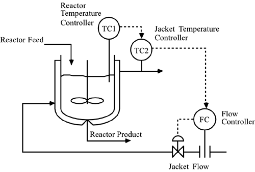
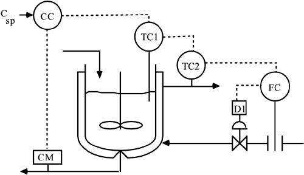
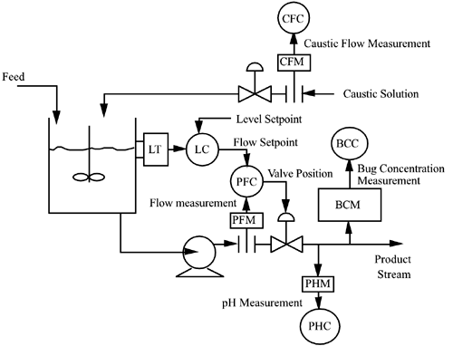
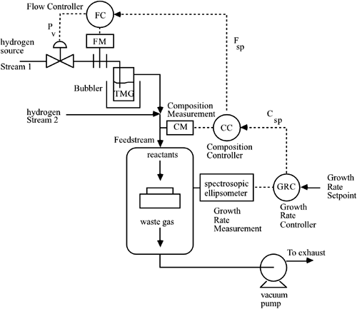
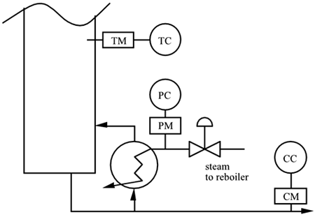
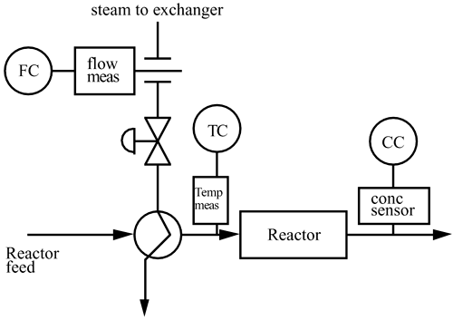
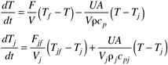
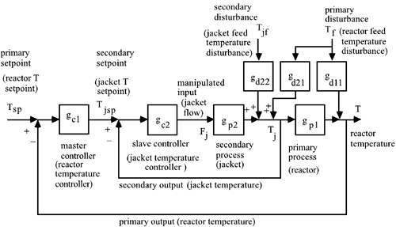
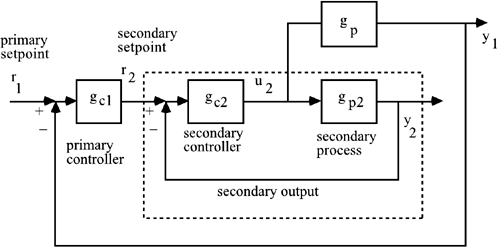

| 1: | Derive the closed-loop transfer function relating the primary setpoint to the primary process output for a cascade-control system. |
| 2: | Derive the closed-loop transfer function relating a secondary disturbance to the primary output for a cascade-control system. |
| 3: | For the following process, develop the double cascade-control loop diagram, where the jacket flow controller is a "tertiary controller." Use the state space form similar to Figure 10-6, where jacket flow rate is an input to the state space representation of the reactor.  |
| 4: | Consider the following instrumentation diagram for a chemical reactor. Csp represents a concentration setpoint. 
Draw the control block diagram for this system. Label every transfer function and signal on the diagram. What type of control strategy would you call this? What is the primary measured variable for this system? What is the primary control variable for this system? Which controller is probably tuned to be the slowest? Which controller is probably tuned to be the fastest? What is the gain for device D1 if a current signal (4–20 mA) is being converted to a pneumatic signal (3–15 psig) (show units)? |
| 5: | For a particular biochemical reactor, the concentration of the microorganism (bug) is controlled by varying the pH in the reactor. The pH is controlled by manipulating the flow of caustic solution to the reactor. The bugs grow by "eating" a waste chemical in the feed stream.
Complete the instrumentation diagram shown below. Draw the control block diagram associated with the bug concentration control strategy. What type of control strategy is this (for the bug concentration control)? Identify the control objective and possible disturbance variables. Name the disturbance variables that each controller is meant to reject.
 |
| 6: | As a budding young engineer in the semiconductor device manufacturing industry, your first assignment involves a chemical vapor deposition reactor. Before you obtained this position, the process did not have many feedback control loops. Your goal is to design a control system that can control the growth rate of a thin film on a wafer. A spectroscopic ellipsometer is available to measure the growth rate of this film. The growth rate is a function of the composition [mole fraction of TMG (trimethyl gallium)] of the inlet feed stream. The composition of the inlet feed stream is a function of the flow rate of hydrogen that bubbles through a bottle of TMG.
Draw the following control instrumentation diagram. Now, draw the corresponding control block diagram, in order to be able to analyze the control loops and tune the controllers. Label all controllers, measurement devices, and signals on the block diagram.  |
| 7: | Consider the following depiction of the bottom portion of a distillation column. It is desired to control the composition of the bottom stream at a certain value (setpoint) by manipulating the steam to the reboiler. Composition is a slow variable, and the measurement device can have significant delays; it is known that measuring and controlling the temperature of a tray in the column can improve disturbance rejection. The temperature is regulated by the pressure of the steam in the reboiler, which is a function of the steam flow to the reboiler. Show the proper signals for a cascade type of control system. Also, develop the corresponding block diagram, showing clearly the disturbances that each loop is meant to reject.  |
| 8: | A common type of chemical reactor is a packed-bed reactor, which is assumed to operate adiabatically (no heat loss). The objective of the following reactor control strategy is to maintain a desired reactor outlet concentration by manipulating the temperature of the inlet stream to the reactor. The reactor inlet temperature is maintained by manipulating the steam flow to a feed preheat exchanger. Connect the measurements and control devices on the control instrumentation diagram and draw the corresponding control block diagram. Label all controllers and signals on both the control instrumentation and control block diagrams. Draw appropriate disturbances on the control block diagram.  |
| 9: | As a young process engineer, you have been given the responsibility for a catalytic reforming unit at a refinery that, for some reason, is just now getting involved with "advanced control." The catalytic reforming unit produces roughly 25% of the gasoline produced by the refinery. The throughput of the unit is 25,000 barrels per day (Bbl/day) and the value is roughly $30/Bbl. The gross operating income of the unit is then roughly $1 million/day. You feel certain that tighter control can improve the yield of the unit, increase the value of the product, and reduce operating costs. The reforming unit consists of three fuel gas-fired furnaces and three catalytic reactors with a number of additional heat exchangers and separation columns. You feel that you must prove that advanced control can work on part of the process before you attempt to implement it on the entire process. You decide that the place to start is on the temperature control of the process fluid leaving the first furnace.
A simplified process instrumentation diagram for the furnace that heats the process stream for the first reactor is shown in Figure 10-1. The "old school" operations personnel have been controlling the outlet temperature of the process stream by simply manipulating the fuel gas valve directly. You realize that this method allows fuel gas header pressure changes to affect the fuel gas flow rate, which will affect the process fluid outlet temperature.
You wish to show the benefits of cascade control for this system. Use your practical engineering knowledge, a number of discussions with the process operators responsible for the reforming unit, an investigation of the unit log books, and determine the following.
Relevant information:
For each increase of 1 psig to the fuel gas valve actuator, the fuel gas flow rate increases by 83.3 scfm (standard cubic feet per minute). For each increase of 1 scfm in fuel gas flow, there is an increase in the outlet reformate stream temperature of 0.36°F. For a change in the upstream fuel gas header pressure of 1 psig, there is a corresponding change of 13.5 scfm in the fuel gas flow rate. For a change in the inlet process stream of 1°F, there is a change of 1°F in the outlet temperature. You assume that the time constant associated with the control valve is roughly 6 seconds (0.1 minutes). The process time constant associated with the furnace is approximately 5 minutes and there is an additional 1 minute time delay.
Design a cascade-control strategy and compare results (using SIMULINK) with the standard feedback-control strategy for two types of disturbances: fuel gas header pressure (±5 psig), and process stream inlet temperature disturbances (±25°F). |
| 10: | Consider a stirred-tank heater that has the following process model:

with the parameter and variable values
V/F = 30 minutes UA = 24 kcal/min °C Vrcp = 850 kcal/°C Vjrjcpj = 120°C Tjf = 120°C T = 40°C Tf = 20°C
Find the state space model for these conditions, if the inputs are Fj, Tjf, and Tf. Show that the linear transfer function model has the form of the following block diagram and find all of the process and disturbance transfer functions. Is a zero of the secondary process transfer function related to the pole of the primary process transfer function?  If changes in the vessel temperature are slow and can be neglected so that only the second (jacket temperature) equation is considered, find the secondary transfer function, gp2 (this is first-order). How does this compare with part b?
|
| 11: | Consider a cascade control block diagram based on a parallel process representation (note that the disturbances are excluded here). Show that the closed-loop transfer function for the inner-loop is the same as for the series representation. Derive the closed-loop transfer function for the outer-loop as a function of the inner-loop closed-loop transfer function. Also, relate gp to gp1 and gp2.  |
| 12: | Develop a block diagram that has the IMC structure on both the primary and secondary loops. |